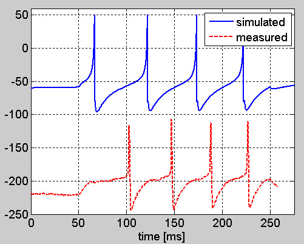

Matlab files for the reproduction of the results described in "A simple integrative electrophysiological model of bursting GnRH neurons" by David Csercsik, Imre Farkas, Erik Hrabovszky and Zsolt Liposits Journal of Computational Neuroscience (DOI) 10.1007/s10827-011-0343-y This 45MB model archive is available through this link useage: c:\matlabdata is used for storage of some data files, and long term simulation results copy the files in folder "matlabdata" to c:\matlabdata, and add the other files (also the ones in "datadef" to the path) "AP_compare_1.m" - simulation file for the comparison of simulated and recorded action potentials (short term Current clamp), as in Fig 4a:  "sim_SD" - for the simulation of somato-dendritic propagation "sim_DS" - for the simulation of dendro-somatic propagation "blockers_compare_AHP" - simulation file to compare the AHP in the case of different channel blockers of various Ca-dependent K currents" "blockers_compare" - simulation file for the comparison of vairous simulated firing patterns in response to a 2 sec long -15 pA current step "DAP_compare_4" - simulation file for the comparison of DAPs in the case of various numbers of preceeding APs "sim_GnRH_Izi_4_VC" - simulation under voltage-clamp conditions "sim_central_4" - Central file for the simulation of bursting and long-term behavior before the burst simulation, if you wish to use own artificially generated AMPA inputs, an AMPA input trace has to be generated in c:\matlabdata with "gen_AMPA_trace". GABA inputs are taken from data files. (AMPA_trace_1,2 etc may be used also) "GnRH_Izi_VC_series" - for the simulation of series of voltage steps use "par_def_GnRH_Izi_4.m" to modify the parameters